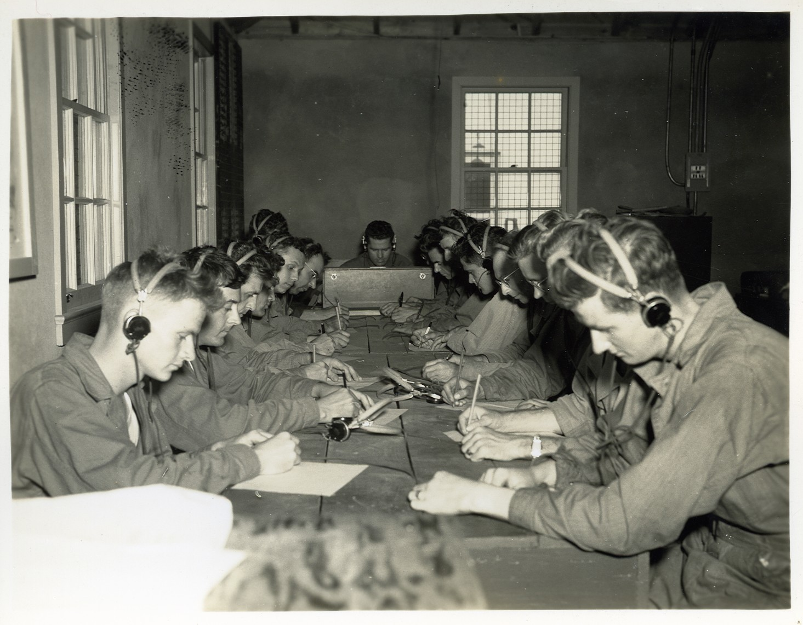
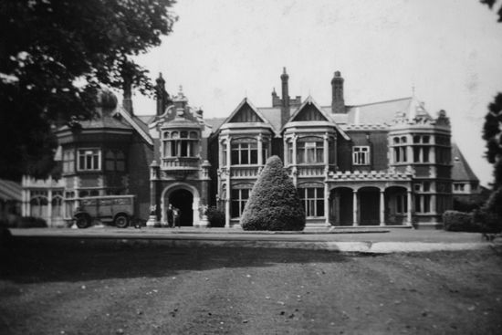
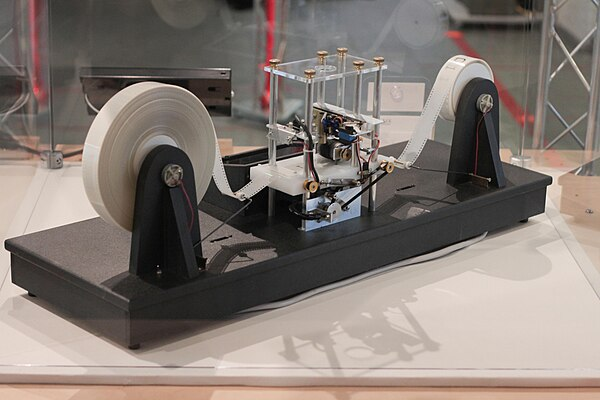
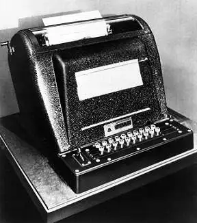
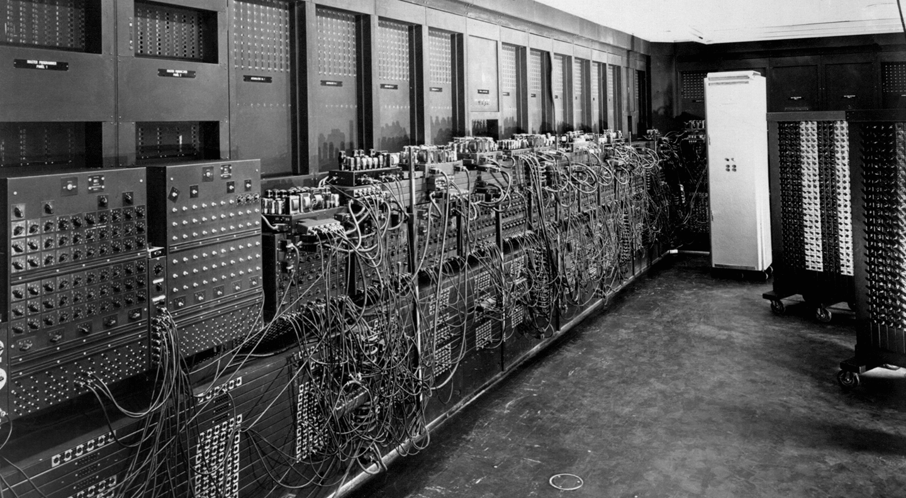
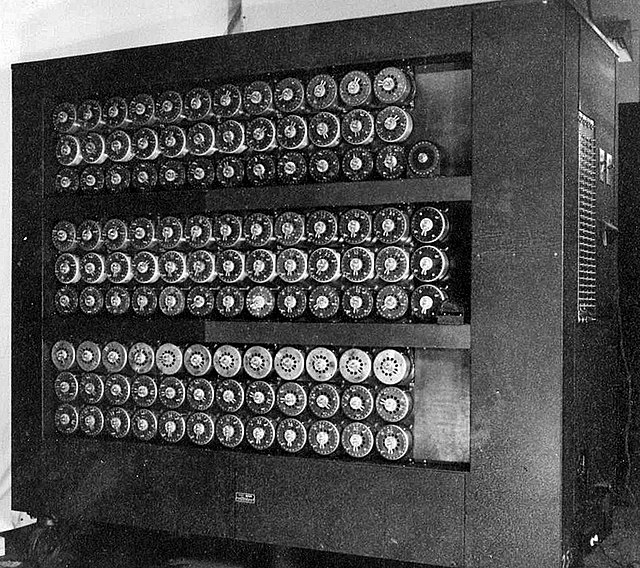
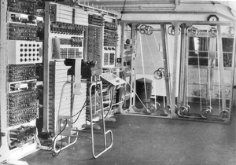

บริบททางประวัติศาสตร์ของสงครามโลกครั้งที่ 2

สงครามโลกครั้งที่ 2 เป็นการรบระหว่างกลุ่มประเทศอักษะนำโดย เยอรมนี อิตาลี และญี่ปุ่น กับกลุ่มประเทศสัมพันธมิตรนำโดย อังกฤษ ฝรั่งเศส และสหรัฐอเมริกา สงครามครั้งนี้เริ่มอย่างเป็นทางการเมื่อกองทัพเยอรมันบุกเข้าไปยึดครองประเทศโปแลนด์ เมื่อวันที่ 1 กันยายน ค.ศ. 1939 ทำให้ประเทศอังกฤษ ฝรั่งเศสและดินแดนอาณานิคมของอังกฤษอีก 4 แห่งคือ ออสเตรเลีย นิวซีแลนด์ บริติชอินเดีย แอฟริกาใต้ ประกาศสงครามกับเยอรมนี ต่อมาในปี 1940 กองทัพเยอรมันรุกรานประเทศนอร์เวย์และประเทศเดนมาร์ก ก่อนที่จะโจมตีฝรั่งเศสผ่านทางประเทศเนเธอร์แลนด์เบลเยียม ลักเซมเบิร์ก ในปีเดียวกันนี้เอง อิตาลีได้ประกาศสงครามกับอังกฤษและฝรั่งเศส ถัดมาในปี 1941 เยอรมนียึดครองยูโกสลาเวียและเริ่มส่งทหารเข้าไปรุกรานสหภาพโซเวียต ขณะที่ญี่ปุ่นโจมตีอ่าวเพิร์ลบนเกาะฮาวายของสหรัฐอเมริกาแล้วประกาศสงครามกับสหรัฐอเมริกาและอังกฤษ การโจมตีของกองทัพญี่ปุ่นครั้งนี้ส่งผลให้สหรัฐอเมริกาตัดสินใจเข้าสู่สงครามโลก ซึ่งสงครามไม่ว่ายุคไหน สิ่งสำคัญอย่างหนึ่งเลยคือ การสื่อสาร ทั้งข้อมูล ความรู้ซึ่งก็ต่างเป็นความลับของฝ่ายตนเองทั้งนั้น ต่างฝ่ายต่างจึงต้องคิดค้นและพัฒนาเครื่องมือต่าง ๆ ที่จะช่วยทำให้สื่อสารกับฝ่ายของตนเองได้ และดักฟังการสื่อสารของฝ่ายตรงข้ามได้
ต้นกำเนิดและการพัฒนาคอมพิวเตอร์ในยุคสงครามโลกครั้งที่ 2
ในยุคสงครามโลกครั้งที่ 2 ระหว่างปี ค.ศ. 1939-1945 เครื่องคอมพิวเตอร์ ถูกพัฒนาขึ้นจากความต้องการการคำนวณจำนวนมาก เช่น การถอดรหัสลับ การสร้างตารางวิถีลูกกระสุนปืนใหญ่ ซึ่งหลังจากอเมริกาเข้าร่วมสงครามแล้ว อเมริกาได้ลงทุนในด้านเทคโนโลยีเพื่อใช้ในการประมวลผลและคำนวณสำหรับวางแผนยุทธศาสตร์และพัฒนาระบบการเข้ารหัสข้อมูลโดยได้รับงบประมาณสนับสนุนจากทางการทหาร

ด้วยสถานการณ์ทางการเมืองและความต้องการของกองทัพในขณะนั้น ผลักดันให้เกิดการพัฒนาคอมพิวเตอร์ขึ้น เพราะในการทำสงครามไม่ว่ายุคไหน สิ่งสำคัญอย่างหนึ่งเลยคือ การสื่อสาร ทั้งข้อมูล ความรู้ซึ่งก็ต่างเป็นความลับของฝ่ายตนเองทั้งนั้น ขณะนั้นฝ่ายนาซีเยอรมันได้พยายามส่งข้อมูลให้กับฝ่ายของตัวเอง และก็มีประเทศหนึ่งที่ทำได้สำเร็จ คือ ประเทศอังกฤษ แต่ถึงจะฟังออกแต่ก็แปลไม่ออกอยู่ดี ทำให้กองทัพอังกฤษ จำเป็นจะต้องเรียกหาผู้เชี่ยวชาญหลายแขนง ไม่ว่าจะเป็นนักถอดรหัส หรือว่านักคณิตศาสตร์ ด้วยหน่วยงานนั้นชื่อว่า Government Code & Cypher School (GC&CS)

ในช่วงสงครามโลกครั้งที่สอง GC&CS ก่อตั้งขึ้นที่ Bletchley Park ซึ่งปัจจุบันคือเมืองมิลตันคีนส์ โดยทำงานเกี่ยวกับการทำความเข้าใจเครื่อง Enigma ของเยอรมันและรหัส Lorenz ในปี 1940 GC&CS เป็นหน่วยงานเข้ารหัสแบบบูรณาการแห่งแรกของอังกฤษโดยมี Alastair Denniston ซึ่งเคยเป็นสมาชิกของ NID25 ได้รับการแต่งตั้งให้เป็นหัวหน้าฝ่ายปฏิบัติการ หน้าที่ของหน่วยงานนี้คือ ให้คำแนะนำเกี่ยวกับความปลอดภัยของรหัสและรหัสลับที่ใช้โดยหน่วยงานของรัฐบาลทั้งหมด และให้ความช่วยเหลือในการจัดหารหัส และยังมีคำสั่งลับในการศึกษาแนวทางการสื่อสารด้วยรหัสลับที่ใช้โดยหน่วยงานต่างประเทศ GC&CS เปลี่ยนชื่อเป็น Government Communications Headquarters (GCHQ) ในปี 1946
เมื่อกล่าวถึงพัฒนาคอมพิวเตอร์ในยุคสงครามโลกครั้งที่ 2 แล้ว จะขาดบุคคลนี้ไปไม่ได้เลยนั่นก็คือ อลัน ทัวริง (Alan Turing) เขาเป็นนักคณิตศาสตร์ นักตรรกศาสตร์ นักรหัสวิทยาและวีรบุรุษสงครามชาวอังกฤษ และเป็นที่ยอมรับว่าเป็นบิดาของวิทยาการคอมพิวเตอร์ เขาได้สร้างรูปแบบที่เป็นทางการทางคณิตศาสตร์ของการระบุขั้นตอนวิธีและการคำนวณ โดยใช้เครื่องจักรทัวริง ซึ่งตามข้อปัญหาเชิร์ช-ทัวริงได้กล่าวว่าเป็นรูปแบบของเครื่องจักรคำนวณเชิงกลที่ครอบคลุมทุก ๆ รูปแบบที่เป็นไปได้ในทางปฏิบัติ ในระหว่างสงครามโลกครั้งที่สอง ทัวริงมีส่วนในการแกะรหัสลับของฝ่ายเยอรมัน โดยเขาเป็นหัวหน้าของกลุ่ม Hut 8 ที่ทำหน้าที่ในการแกะรหัสของเครื่องเอนิกมาที่ใช้ในฝ่ายทหารเรือ ซึ่งประมาณกันว่าเขาสามารถย่นเวลาสงครามได้ถึง 2 ปี การถอดรหัสจากเครื่องเอนิกม่า เป็นเรื่องที่ยากแสนสาหัสมาก ผู้ถอดรหัสต้องมีโค้ดสำหรับการเซ็ตรหัสที่ถูกต้อง ซึ่งวิธีการเซ็ตทั้งหมดมีมากถึง 159 ล้านล้านล้านรูปแบบ นั่นทำให้ฝั่งนาซีมั่นใจในความปลอดภัยของเครื่องเอนิกม่าอย่างมากว่าจะไม่มีวันโดนเจาะรหัสอย่างเด็ดขาด แต่แล้วทัวริงก็ค้นพบวิธีถอดรหัสของเครื่องเอนิกม่าได้สำเร็จในเดือนมีนาคม ปี 1940 และสามารถถอดใจความของรหัสปฏิบัติการทั้งหลายของกองทัพเยอรมันได้ ทำให้กองทัพอังกฤษสามารถรับมือกับกองทัพนาซีในการทำสงคราม เช่น สามารถวางแผนป้องกันการโจมตีทางอากาศของกองทัพอากาศเยอรมัน รวมถึงปฏิบัติการทางทหารต่าง ๆ ของกองทัพเยอรมัน ช่วยลดความสูญเสียที่เกิดขึ้นกับฝั่งอังกฤษได้อย่างมาก หลังสงครามเขาได้ออกแบบเครื่องคอมพิวเตอร์อิเล็กทรอนิกส์ที่สามารถโปรแกรมได้เครื่องแรก ๆ ของโลกที่ห้องปฏิบัติการฟิสิกส์แห่งชาติ และได้สร้างเครื่องคอมพิวเตอร์ขึ้นจริง ๆ ที่มหาวิทยาลัยแมนเชสเตอร์ รางวัลทัวริงได้รับการก่อตั้งขึ้นเพื่อยกย่องเขาในเรื่องนี้

ในปี ค.ศ. 1937 Alan Turing ได้ลงพิมพ์บทความถึง Turing Machine เครื่องจักรในอุดมคติ ซึ่ง สามารถคำนวณทางตัวเลขได้ โดยชี้ให้เห็นว่า การคำนวณส่วนใหญ่ สามารถใช้ Turing Machine หาผลการคำนวณได้ จากนั้น Turing ได้อธิบายถึง Universal Turing Machine ว่า เป็น Turing Machine เครื่องหนึ่ง ซึ่งสามารถทำการคำนวนได้แบบอเนกประสงค์ กล่าวคือ ได้มีการจำลองการทำงานให้เหมือน Turing Machine ที่คำนวณเฉพาะงานโดยอาศัยโปรแกรม และ Turing ได้พิสูจน์ให้เห็นว่า Universal Turing Machine ถูกสร้างขึ้นโดยให้มีโครงสร้างเหมือนกับ Turing Machine ที่มีความสามารถในการโปรแกรมจำลองการทำงานได้ไม่จำกัด และยังชี้ให้เห็นว่ามีการคำนวณบางประเภท ที่ไม่สามารถเขียนเป็นโปรแกรมได้ โดย Universal Turing Machine ถือได้ว่าเป็นต้นความคิดที่นำไปสู่การสร้างเครื่องคอมพิวเตอร์ ในปีเดียวกัน

ในปี ค.ศ. 1939 Stibitz และ S.B. Williams สร้างเครื่อง Complex Number Calculator เป็นเครื่องคำนวนโดยใช้ไฟฟ้าระบบเลขฐาน 2 เครื่องแรก ส่วนของการคำนวณประกอบด้วย รีเลย์โทรศัพท์ 450 ตัว และ crossbar switches 10 ตัว สามารถหาผลการหารของตัวเลข complex number แปดหลัก สองตัวในเวลา 30 วินาที

ในราวปี ค.ศ. 1937-1944 Howard H. Aiken กับวิศวกรจาก IBM ได้พัฒนาเครื่องคอมพิวเตอร์ IBM automatic sequence controlled calculator หรือเรียกกันว่า Harvard MARK I โดยใช้รีเลย์สวิทช์ เป็นส่วนประกอบหลัก มีชุดควบคุมการคำนวณหลักโดยอ่านโปรแกรมจากเทปเจาะรู และนำข้อมูลเข้าโดยบัตรเจาะรูอีกทางหนึ่ง ซึ่งมีความสามารถในการ บวก ลบ คูณ และ หารเลขได้ โดยผลลัพธ์นั้นจะพิมพ์เป็นบัตรเจาะรู หรือพิมพ์ออกกระดาษโดยเครื่องพิมพ์ โดยทหารเรือได้ใช้เครื่องนี้คำนวณสร้างตารางตัวเลขในช่วงสงครามโลก

โครงการสร้างเครื่องคอมพิวเตอร์ ENIAC โดย John Mauchly และ J.Presper Eckert, Jr. ที่ Moore School of Electrical Engineering, University of Pennsylvania ใน Philadelphia ได้เริ่มขึ้นในปี ค.ศ. 1943 สร้างเสร็จใน ปี ค.ศ. 1945 ถือเป็นเครื่องคอมพิวเตอร์ ที่เป็นอิเลคทรอนิกส์ทั้งหมดเครื่องแรก โดยเครื่องได้รับการออกแบบให้เป็นโมดูล มีการโปรแกรมเครื่องให้ทำงานตามความต้องการโดยการโยงสายไฟ ต่อโมดูลต่างๆ เข้าด้วยกัน เครื่อง ENIAC ใช้หลอดสุญญากาศกว่า 18,000 หลอด ตัวเครื่องสูง 10 ฟุต ต้องใช้พื้นที่กว่า 1,000 ตารางฟุต น้ำหนักรวม 30 ตัน ใช้ไฟกว่า 150 กิโลวัตต์ เครื่องสามารถทำการคำนวณได้ 300 ครั้งต่อวินาที ราคารวม $486,800 ENIAC ได้นำไปใช้งานที่ U.S. Army Ballistics Research Laboratory, Aberdeen Proving Grounds, Maryland จนถึงปี ค.ศ.1955
บทบาทของคอมพิวเตอร์ในสงครามโลกครั้งที่ 2
ฝ่ายสัมพันธมิตรได้พัฒนาเครื่องจักรเพื่อถอดรหัสข้อความที่เข้ารหัสด้วยเครื่องอีนิกมา (Enigma) ของนาซีเยอรมนี เครื่องจักรเหล่านี้ เช่น "เดอะ บอมบ์" (Bombe) และ "โคลอสซัส" (Colossus) ถูกสร้างขึ้นเพื่อวิเคราะห์และถอดรหัสข้อความที่ซับซ้อน ซึ่งช่วยให้ฝ่ายสัมพันธมิตรสามารถรับรู้แผนการและยุทธศาสตร์ของศัตรูได้อย่างมีประสิทธิภาพ

เครื่อง Enigma เป็นอุปกรณ์เข้ารหัสที่พัฒนาและใช้งานในช่วงต้นถึงกลางศตวรรษที่ 20 เพื่อปกป้องการสื่อสารทางการค้า การทูต และการทหาร เครื่องนี้ถูกนำมาใช้โดยนาซีเยอรมนีในช่วงสงครามโลกครั้งที่สองในทุกสาขาของกองทหารเยอรมัน เครื่อง Enigma ถือว่ามีความปลอดภัยสูงมากจนถูกนำมาใช้เข้ารหัสข้อความที่เป็นความลับสูงสุด เครื่อง Enigma มีกลไกโรเตอร์แบบไฟฟ้ากลที่ทำหน้าที่สับเปลี่ยนตัวอักษร 26 ตัวในตัวอักษรภาษาอังกฤษ ในการใช้งานทั่วไป คนคนหนึ่งจะพิมพ์ข้อความบนแป้นพิมพ์ของเครื่อง Enigma และอีกคนจะเขียนลงไปว่าไฟ 26 ดวงเหนือแป้นพิมพ์ดวงใดที่สว่างขึ้นเมื่อกดแป้นแต่ละครั้ง หากป้อนข้อความธรรมดา ตัวอักษรที่สว่างขึ้นจะเป็นข้อความเข้ารหัส การป้อนข้อความเข้ารหัสจะเปลี่ยนข้อความนั้นกลับเป็นข้อความธรรมดาที่อ่านได้ กลไกโรเตอร์จะเปลี่ยนการเชื่อมต่อไฟฟ้าระหว่างแป้นและไฟทุกครั้งที่กดแป้น ความปลอดภัยของระบบขึ้นอยู่กับการตั้งค่าเครื่องที่มักจะเปลี่ยนแปลงทุกวัน โดยอิงตามรายการคีย์ลับที่แจกจ่ายล่วงหน้า และการตั้งค่าอื่นๆ ที่เปลี่ยนแปลงสำหรับแต่ละข้อความ สถานีรับจะต้องทราบและใช้การตั้งค่าที่แน่นอนที่ใช้โดยสถานีส่งเพื่อถอดรหัสข้อความ แม้ว่านาซีเยอรมนีจะแนะนำการปรับปรุงชุดหนึ่งให้กับเอนิกม่าตลอดหลายปีที่ผ่านมาซึ่งขัดขวางความพยายามในการถอดรหัส แต่ก็ไม่ได้ป้องกันโปแลนด์จากการแคร็กเครื่องได้ตั้งแต่เดือนธันวาคม พ.ศ. 2475 และอ่านข้อความก่อนและระหว่างสงคราม การที่โปแลนด์แบ่งปันความสำเร็จของตนทำให้ฝ่ายพันธมิตรสามารถใช้ประโยชน์จากข้อความที่เข้ารหัสด้วยเอ็นิกม่าเป็นแหล่งข่าวกรองที่สำคัญได้ นักวิจารณ์หลายคนกล่าวว่ากระแสข่าวกรองการสื่อสารของอุลตราจากการถอดรหัสเอนิกม่า ลอเรนซ์ และรหัสอื่นๆ ทำให้สงครามสั้นลงอย่างมากและอาจเปลี่ยนแปลงผลลัพธ์ของสงครามได้ด้วย

Bombe เป็นอุปกรณ์ไฟฟ้าเครื่องกลที่ใช้โดยนักเข้ารหัสชาวอังกฤษเพื่อช่วยถอดรหัสข้อความลับที่เข้ารหัสด้วยเครื่อง Enigma ของเยอรมันในช่วงสงครามโลกครั้งที่สอง ต่อมากองทัพเรือสหรัฐฯและกองทัพบกสหรัฐได้ผลิตเครื่องจักรของตนเองที่มีคุณสมบัติการใช้งานเหมือนกัน แม้ว่าจะมีการออกแบบที่แตกต่างกันทั้งจากกันและกันและจากเครื่อง Bombe ของโปแลนด์และอังกฤษ Bombe ของอังกฤษได้รับการพัฒนาจากอุปกรณ์ที่เรียกว่า "bomba" ซึ่งได้รับการออกแบบในโปแลนด์ที่ Biuro Szyfrów (สำนักงานเข้ารหัส) โดยนักเข้ารหัส Marian Rejewski ซึ่งได้ทำการถอดรหัสข้อความ Enigma ของเยอรมันมาแล้วเป็นเวลาเจ็ดปี โดยใช้เครื่องนี้และเครื่องรุ่นก่อนหน้า การออกแบบเบื้องต้นของบอมบ์อังกฤษนั้นผลิตขึ้นในปี 1939 ที่ UK Government Code and Cypher School (GC&CS) ที่ Bletchley Park โดย Alan Turing โดยมีการปรับปรุงที่สำคัญที่คิดค้นขึ้นในปี 1940 โดย Gordon Welchman การออกแบบทางวิศวกรรมและการก่อสร้างนั้นเป็นผลงานของ Harold Keen จาก British Tabulating Machine Company บอมบ์ตัวแรกที่มีชื่อรหัสว่า Victory ได้รับการติดตั้งในเดือนมีนาคม 1940 ในขณะที่รุ่นที่สอง Agnus Dei หรือ Agnes ซึ่งนำการออกแบบใหม่ของ Welchman มาใช้นั้นได้เริ่มดำเนินการในเดือนสิงหาคม 1940 บอมบ์ได้รับการออกแบบมาเพื่อค้นหาการตั้งค่ารายวันบางส่วนของเครื่อง Enigma บนเครือข่ายทางทหารต่างๆ ของเยอรมัน โดยเฉพาะอย่างยิ่งชุดโรเตอร์ที่ใช้งานและตำแหน่งของโรเตอร์ในเครื่อง ตำแหน่งเริ่มต้นแกนโรเตอร์สำหรับข้อความ—คีย์ข้อความ—และสายไฟหนึ่งของแผงปลั๊กไฟ

Colossus เป็นชุดคอมพิวเตอร์ที่พัฒนาโดยผู้ถอดรหัสชาวอังกฤษในช่วงปี 1943–1945 เพื่อช่วยในการวิเคราะห์รหัสลับของรหัส Lorenz Colossus ใช้หลอดสุญญากาศ (thermionic tube) เพื่อดำเนินการบูลีนและการนับ ดังนั้น Colossus จึงถือได้ว่าเป็นคอมพิวเตอร์ดิจิทัลอิเล็กทรอนิกส์แบบตั้งโปรแกรมได้เครื่องแรกของโลก แม้ว่าจะตั้งโปรแกรมด้วยสวิตช์และปลั๊ก ไม่ใช่ด้วยโปรแกรมที่เก็บไว้ Colossus ได้รับการออกแบบโดย Tommy Flowers วิศวกรโทรศัพท์วิจัยของสำนักงานไปรษณีย์ทั่วไป (GPO) โดยอิงจากแผนที่พัฒนาโดยนักคณิตศาสตร์ Max Newman ที่ Government Code and Cypher School (GC&CS) ที่ Bletchley Park การใช้ความน่าจะเป็นของ Alan Turing ในการวิเคราะห์รหัสลับ มีส่วนช่วยในการออกแบบ บางครั้งมีการกล่าวอย่างผิดพลาดว่า Turing ออกแบบ Colossus เพื่อช่วยในการวิเคราะห์รหัสลับของ Enigma (เครื่องจักรของทัวริงที่ช่วยถอดรหัสเอ็นิกม่าคือบอมบ์เครื่องกลไฟฟ้า ไม่ใช่โคลอสซัส) ต้นแบบ โคลอสซัส มาร์ก 1 แสดงให้เห็นว่าใช้งานได้ในเดือนธันวาคม พ.ศ. 2486 และใช้งานที่เบล็ตช์ลีย์พาร์คในช่วงต้นปี พ.ศ. 2487 โคลอสซัส มาร์ก 2 ที่ได้รับการปรับปรุงซึ่งใช้รีจิสเตอร์เลื่อนเพื่อให้ทำงานเร็วขึ้นห้าเท่า เริ่มทำงานครั้งแรกเมื่อวันที่ 1 มิถุนายน พ.ศ. 2487 ซึ่งตรงกับเวลาที่นอร์มังดีขึ้นบกในวันดีเดย์พอดี โคลอสซัสสิบเครื่องถูกใช้งานเมื่อสิ้นสุดสงคราม และอีกเครื่องที่สิบเอ็ดกำลังถูกใช้งาน การใช้เครื่องจักรเหล่านี้ในเบล็ตช์ลีย์พาร์คทำให้ฝ่ายพันธมิตรได้รับข้อมูลข่าวกรองทางทหารระดับสูงจำนวนมากจากข้อความโทรเลขวิทยุที่ดักฟังได้ระหว่างกองบัญชาการทหารสูงสุดเยอรมัน (OKW) และกองบัญชาการกองทัพของพวกเขาทั่วทั้งยุโรปที่ถูกยึดครอง การมีอยู่ของเครื่องจักรโคลอสซัสถูกเก็บเป็นความลับจนถึงกลางทศวรรษ 1970 เครื่องจักรทั้งหมดถูกแยกชิ้นส่วนออกเป็นชิ้นเล็กชิ้นน้อย ยกเว้นสองเครื่อง ซึ่งไม่สามารถอนุมานการใช้งานได้ ในที่สุด เครื่องจักรทั้งสองเครื่องที่เก็บรักษาไว้ก็ถูกแยกชิ้นส่วนออกในช่วงทศวรรษ 1960 ในเดือนมกราคม 2024 GCHQ ได้เผยแพร่ภาพถ่ายชุดใหม่ซึ่งแสดงให้เห็น Colossus ที่ได้รับการออกแบบใหม่ในสภาพแวดล้อมที่แตกต่างอย่างมากจากอาคาร Bletchley Park ซึ่งคาดว่าน่าจะอยู่ที่ GCHQ Cheltenham การสร้าง Mark 2 Colossus ขึ้นมาใหม่ให้ใช้งานได้นั้นเสร็จสมบูรณ์ในปี 2008 โดย Tony Sale และทีมอาสาสมัคร โดยจัดแสดงอยู่ที่พิพิธภัณฑ์คอมพิวเตอร์แห่งชาติที่ Bletchley Park
การเปลี่ยนแปลงของการพัฒนาคอมพิวเตอร์หลังสงคราม

คอมพิวเตอร์ได้รับการพัฒนามาเป็นอย่างดีก่อนสงครามโลกครั้งที่สองจะเริ่มต้น อย่างไรก็ตาม สงครามเรียกร้องให้มีการพัฒนาเทคโนโลยีดังกล่าวอย่างรวดเร็ว ส่งผลให้มีการผลิตคอมพิวเตอร์รุ่นใหม่ที่มีพลังที่ไม่เคยมีมาก่อน ตัวอย่างหนึ่งคือ Electronic Numerical Integrator and Computer (ENIAC) ซึ่งเป็นหนึ่งในคอมพิวเตอร์เอนกประสงค์เครื่องแรกๆ ENIAC สามารถคำนวณได้หลายพันครั้งในหนึ่งวินาที เดิมที่ออกแบบมาเพื่อวัตถุประสงค์ทางการทหาร แต่สร้างเสร็จในปี 1945 รัฐบาลสหรัฐอเมริกาได้พัฒนาคอมพิวเตอร์ในช่วงสงครามและเปิดตัว ENIAC ต่อสาธารณชนทั่วไปในช่วงต้นปี 1946 โดยนำเสนอคอมพิวเตอร์เป็นเครื่องมือที่จะปฏิวัติวงการคณิตศาสตร์ ENIAC มีพื้นที่ 1,500 ตารางฟุตและมีตู้ 40 ตู้ที่มีความสูง 9 ฟุต มีราคา 400,000 ดอลลาร์ การที่ ENIAC มีจำหน่ายทำให้แตกต่างจากคอมพิวเตอร์เครื่องอื่นๆ และถือเป็นช่วงเวลาสำคัญในประวัติศาสตร์ของเทคโนโลยีคอมพิวเตอร์ ในช่วงทศวรรษ 1970 สิทธิบัตรสำหรับเทคโนโลยีคอมพิวเตอร์ ENIAC ได้รับการยอมรับจากสาธารณชน ทำให้ข้อจำกัดในการปรับเปลี่ยนการออกแบบเทคโนโลยีเหล่านี้ถูกยกเลิกไป การพัฒนาอย่างต่อเนื่องในช่วงหลายทศวรรษต่อมาทำให้คอมพิวเตอร์มีขนาดเล็กลง มีประสิทธิภาพมากขึ้น และราคาถูกลง